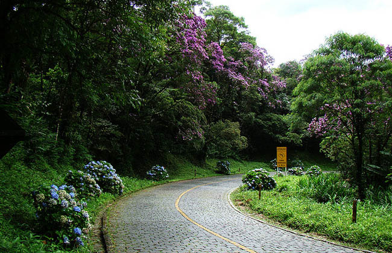

As road trips, que são viagens pela estrada, são parte do estilo de vida de muita gente. É uma chance de não só ir para outra cidade ou país, mas de explorar seus entornos e paisagens enquanto pilota. Separamos 8 roteiros incríveis para viajar de moto pelo Brasil, porque não importa o destino, mas sim, a jornada e a história depois contada.
O trajeto pela SC-438 forma uma das mais belas paisagens brasileiras, ainda que seja um tanto perigosa pela quantidade de curvas ingrímes. Ligando as cidades Bom Jardim da Serra e Lauro Miller, a estrada a 1.467 metros de altura tem 35 km e visual para o verde da Mata Atlântica. Durante o inverno pode haver camadas de gelo na pista.

Passando pela maior estrada do Brasil, o trecho da BR-116 que liga Porto Alegre a Nova Petrópolis tem paisagens encantadoras e bucólicas. Chamado de Via-Serrana, está incluso na Rota Romântica, que passa por algumas pequenas cidades como Picada Café e Morro Reuter, além de Canela, Gramado, Nova Petrópolis e Novo Hamburgo.
Para quem viaja pelo Nordeste, a dica é pegar a RN-063, que vai da praia de Ponta Negra, ao sul de Natal, até a praia da Pipa, uma das mais bonitas da capital. O trecho inclui a faixa litorânea de Cotovelo, Pirangi (onde fica o maior cajueiro do mundo), Búzios, Tabatinga, Camurupim e Barreta. É preciso ficar atento aos trechos estreitos e aos animais que cruzam a pista.
?Como Minas Gerais é um tesouro histórico, nem mesmo suas estradas deixam esse legado de lado. A Estrada Real tem mais de 1,6 mil quilômetros de extensão, incluindo caminhos abertos no século 17 e alguns trechos diferentes para serem percorridos. Saindo de Ouro Preto, é possível ir até Paraty, no Rio de Janeiro, passando por Barbacena, Juiz de Fora e Petrópolis, só observando a natureza. Confira aqui nosso roteiro para road trip em terras mineiras.

Ligando duas cidades serranas do Rio de Janeiro, a sinuosa BR-495 foi apelidada como “Estrada das Hortências” não por acaso, já que as flores ornamentam um de seus trechos (35 km). Saindo de Petrópolis, percorre ao todo 184 km entre as cidades de Magé, Itaboraí, Tanguá, Rio Bonito, Embaú, Casimiro de Abreu e Sana, que é o destino final. Entre Itaipava e Teresópolis se avistam os belos vales da Serra dos Órgãos, a cerca de 1.500 metros de altura, além de ser possível incluir Nova Friburgo no roteiro.
A Bahia tem paisagens deslumbrantes até mesmo na estrada. Considerada a primeira do país a ter controle ambiental em todas as suas fases de construção, a rodovia de 65 km liga Ilhéus e Itacaré por meio de lagoas, trechos da Mata Atlântica e praias paradisíacas.
O litoral Norte paulista é conhecido por reunir as mais belas praias de São Paulo e um dos trajetos para se chegar até elas é pela BR-101, que chega até Paraty e Angra dos Reis, no Rio de Janeiro. Com 457 km de extensão, passa por várias praias até chegar ao destino final: Santos, Guarujá, Boraceia, Jureia, Juquehy, Maresias, Ubatuba e Ilhabela. Rodeada de verde, tem trechos retos e sinuosos ao longo do caminho, altos e baixos aos pés de montanhas, de onde se avista o mar vez ou outra quando o céu está limpo.
Livre de ônibus e caminhões, essa charmosa estrada tem 33 km de extensão, passando por elementos do século 19. Revestida de paralelepípedos, sai de Curitiba rumo a Antonina e Morretes, que também é acessada de trem de luxo. Inaugurado em 1873, o trecho passa pelo litoral paranaense, pela serra do mar e pela Mata Atlântica, de onde também se avista a baía de Paranaguá.
